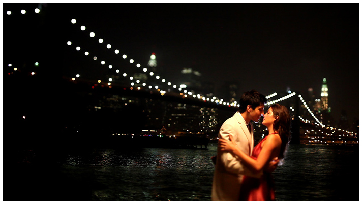

Canon 5D Mark II

De Canon 5D Mark II ziet eruit als een gewoon fototoestel. Maar we kunnen er ook HD mee opnemen. Betekent dit dat de 5D MII een volwaardige filmcamera is? En zorgt Canon voor een ware revolutie in TV-land?
Een digitale HD camera met een full frame sensor. Wat betekent dat?